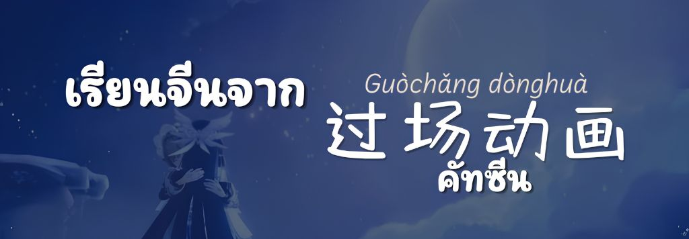
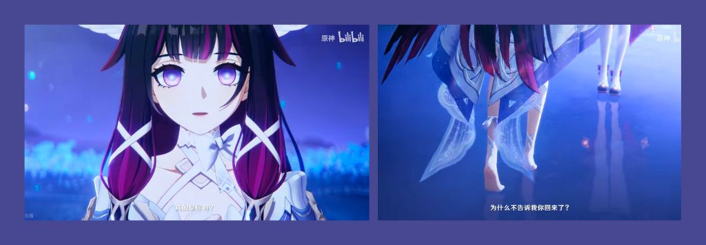
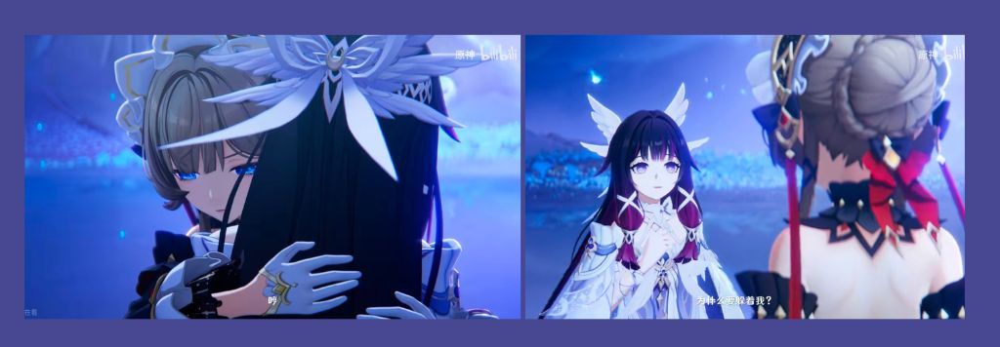
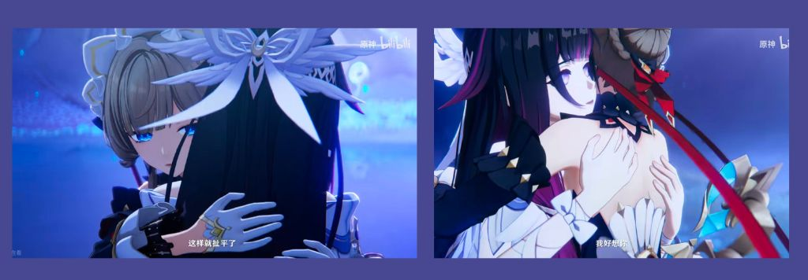
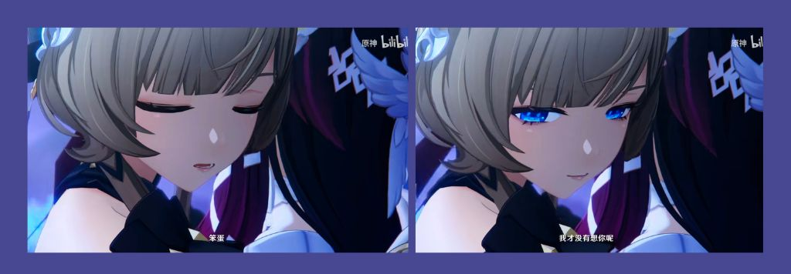
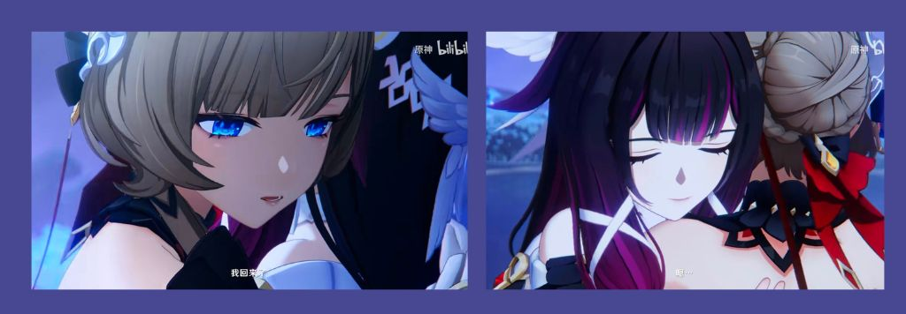

เรียนจีนจากคัทซีน

เล่นเกมจีนทั้งทีก็ต้องได้จีนสักนิด เกมที่เราจะนำคำศัพท์มาเสนอคือเกมที่ชื่อว่า 原神 Yuánshén หรือที่รู้จักกันในชื่อ เกนชินนั่นเองค่ะ โดยจะขอโฟกัสไปที่คัทซีนของสองตัวละครโปรดของผู้เขียนอย่าง โคลัมบิน่าและแซนโดรเน่ค่ะ พอสองคนนี้อยู่ด้วยกันแล้วมันก็จักจี้ใจนะคะ เฟื่อนมากกก
พูดถึงคู่จิ้น เรามักเห็นคนจีนใช้คำว่า CP ในการใช้เรียกคู่จิ้นกันค่ะ โดยมันย่อมาจาก Couple Pairing การจับคู่นั้นเอง ซึ่งคู่โคลัมบิน่าแซนโดรเน่ของเราก็มีชื่อในภาษาจีนนะคะ คือ 少偶 ซึ่งมาจากการรวมกันของชื่อภาษาจีนอีกสองชื่อของทั้งสองคนค่ะ 少女 + 本偶
คัทซีนในเกมที่เรานำมาศึกษาในวันนี้คือ คัทซีนการกลับมาเจอกันของโคลัมบิน่าและแซนโดรเน่ค่ะ ต้องเท้าความก่อนว่าในเนื้อเรื่องทั้งสองคนนี้ถูกโชคชะตาแยกให้จากกัน ตัวผู้เขียนซาบซึ้งจนร้องไห้ ซึมหลายวัน จนในที่สุดวันนี้ก็มาถึง วันที่ควรถูกจารึก วันที่ 1 กรกฎาคม ปีพุทธศักราช 2569
แปลแบบติดฟิลเตอร์

真的是你吗？zhēn de shì nǐ ma นั่นเธอจริง ๆ หรอ
为什么不告诉我你回来了？wèishéme bù gàosù wǒ nǐ huíláile? ทำไมถึงไม่บอกเค้าเลยล่ะคะ ว่าเธอกลับมาแล้ว...

为什么你躲着我？Wèishéme nǐ duǒzhe wǒ? ทำไมเธอถึงหลบหน้าเค้าคะ
哼 (เสียงหึเบา ๆ ) ถ้ามีตัวสี่เหลี่ยมหรือตัวโค่วด้านหน้า สันนิษฐานได้เลยว่าต้องเกี่ยวกับเสียงหรอการพูดค่ะ

这样就扯平了。Zhèyàng jiù chě píngle ทีนี้ก็หายกันแล้วนะ
我好想你。Wǒ hǎo xiǎng nǐ เค้าคิดถึงเธอมาก ๆ เลยค่ะ

我才没有想你呢，笨蛋！Wǒ cái méiyǒu xiǎng nǐ ne, bèndàn! ฉ-ฉันไม่ได้คิดถึงเธอซะหน่อย ยัยบ๊อง!

我回来了。Wǒ huíláile ฉันกลับมาหาเธอแล้วนะ ดวงใจของฉัน
嗯 อื้อ